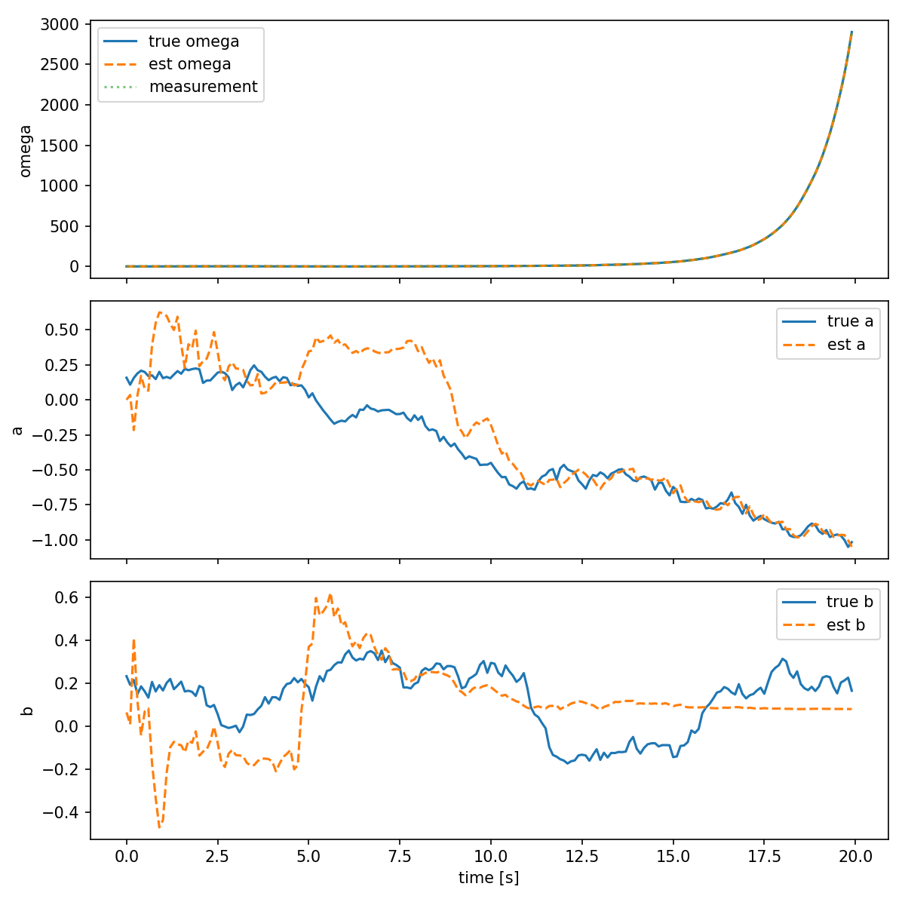

Extended Kalman Filter
Review (Kalman filter) on covariance prediction and correction
For a nonlinear dynamic system:
Time update (prediction):
Note: A constant linear matrix \(A\) does not exist for nonlinear systems; instead we linearize about the current estimate and use a time-varying Jacobian \(A_{k}\).
Measurement (correction):
The key step in the Extended Kalman Filter (EKF) is computing the Jacobians \(A_{k}\) and \(C_{k}\) (the linearizations of \(f\) and \(g\) about the current estimate):
The Jacobian \(A_{k}\) can be written elementwise as
and similarly for \(C_{k}\) using partial derivatives of \(g\).
and similarly for \(C_{k}\) using partial derivatives of \(g\) (measurements \(y\in\mathbb{R}^{m}\)):
For differential equations (continuous → discrete):
\[\dot{x} = f(x, u) \quad\Rightarrow\quad x_{k} \approx x_{k-1} + T_{s}\,f\bigl(x_{k-1},\,u_{k-1}\bigr)\]The discrete-time Jacobian (linearized about the estimate) is:
\[A_{k-1} = I + T_{s}\left.\frac{\partial f}{\partial x}\right|_{x=\hat{x}_{k-1|k-1}}\]The estimated state vector (column form) is written as:
\[\begin{split}\hat{x}_{k|k} = \begin{bmatrix} \hat{x}_{1} \\ \hat{x}_{2} \\ \vdots \\ \hat{x}_{n} \end{bmatrix}\end{split}\]
Example
Let
Then the continuous-time dynamics for the state components are
or in compact form
with
and the process-noise term
The continuous-time Jacobian:
The discretized linearization (Euler, sample time \(T_{s}\)) is
If we measure only the angular rate \(\omega\), the measurement model is
% ekf_example.m
% Extended Kalman Filter example (3-state) using Euler discretization
function ekf_example()
Ts = 0.1;
N = 200;
t = 0:Ts:Ts*(N-1);
% true initial state
x_true = [0.5; 0.1; 0.2];
% initial estimate
x = [0;0;0];
P = diag([0.5,0.5,0.5]);
Qc = diag([0.1, 0.01, 0.01]);
R = 0.05;
rng('default');
for k = 1:N
tk = t(k);
% simulate true system (Euler)
w = mvnrnd([0 0 0], Qc)';
x_true = x_true + Ts * f_cont(x_true, tk) + sqrt(Ts)*w;
% measurement
v = sqrt(R)*randn();
y = x_true(1) + v;
% predict
[x_pred, P_pred] = ekf_predict_matlab(x, P, Ts, Qc, tk);
% update
[x, P] = ekf_update_matlab(x_pred, P_pred, y, R);
end
disp('Final true state:'); disp(x_true');
disp('Final estimate:'); disp(x');
end
% Plot results
figure;
tt = 0:Ts:Ts*(N-1);
subplot(3,1,1);
plot(tt, true_states(1,:),'b-', tt, est_states(1,:),'r--');
legend('true omega','est omega'); ylabel('omega');
subplot(3,1,2);
plot(tt, true_states(2,:),'b-', tt, est_states(2,:),'r--');
legend('true a','est a'); ylabel('a');
subplot(3,1,3);
plot(tt, true_states(3,:),'b-', tt, est_states(3,:),'r--');
legend('true b','est b'); ylabel('b'); xlabel('time (s)');
function dx = f_cont(x, t)
omega = x(1); a = x(2); b = x(3);
dx = [-a*omega + 1.5*sin(t) + b; 0; 0];
end
function A = A_cont(x, t)
omega = x(1); a = x(2);
A = [-a, -omega, 1; 0,0,0; 0,0,0];
end
function [x_pred, P_pred] = ekf_predict_matlab(x, P, Ts, Qc, t)
x_pred = x + Ts * f_cont(x, t);
A = eye(3) + Ts * A_cont(x, t);
P_pred = A * P * A' + Ts * Qc;
end
function [x_upd, P_upd] = ekf_update_matlab(x_pred, P_pred, y, R)
C = [1 0 0];
S = C * P_pred * C' + R;
K = (P_pred * C') / S;
x_upd = x_pred + K * (y - C * x_pred);
P_upd = (eye(3) - K * C) * P_pred;
end
import numpy as np
def f(x, t):
# continuous dynamics converted to discrete via Euler (sample time applied outside)
# x = [omega, a, b]
omega, a, b = x
dx1 = -a * omega + 1.5 * np.sin(t) + b
dx2 = 0.0
dx3 = 0.0
return np.array([dx1, dx2, dx3])
def g(x):
# measurement: y = omega
return np.array([x[0]])
def A_continuous(x, t):
# Jacobian of f wrt x (continuous-time)
omega, a, b = x
return np.array([[-a, -omega, 1.0],
[0.0, 0.0, 0.0],
[0.0, 0.0, 0.0]])
def C_jacobian(x):
# Jacobian of g wrt x
return np.array([[1.0, 0.0, 0.0]])
def ekf_predict(x, P, Ts, Qc, t):
# discrete-time predict using Euler discretization
# x_{k} = x_{k-1} + Ts * f(x_{k-1}, t)
x_pred = x + Ts * f(x, t)
A = np.eye(3) + Ts * A_continuous(x, t)
P_pred = A @ P @ A.T + Ts * Qc
return x_pred, P_pred
def ekf_update(x_pred, P_pred, y, R):
C = C_jacobian(x_pred)
S = C @ P_pred @ C.T + R
K = P_pred @ C.T @ np.linalg.inv(S)
x_upd = x_pred + (K @ (y - g(x_pred))).reshape(-1)
P_upd = (np.eye(len(x_pred)) - K @ C) @ P_pred
return x_upd, P_upd
def simulate_and_run(Ts=0.1, N=200):
t = 0.0
# true initial state
x_true = np.array([0.5, 0.1, 0.2])
# initial estimate
x = np.array([0.0, 0.0, 0.0])
P = np.diag([0.5, 0.5, 0.5])
# continuous process noise covariance (Qc) and measurement noise (R)
Qc = np.diag([0.1, 0.01, 0.01])
R = np.array([[0.05]])
history = []
for k in range(N):
# simulate true system (Euler discrete approx)
w = np.random.multivariate_normal(np.zeros(3), Qc) * np.sqrt(Ts)
x_true = x_true + Ts * f(x_true, t) + w
# measurement
v = np.random.normal(0, np.sqrt(R[0,0]))
y = np.array([x_true[0] + v])
# EKF predict
x_pred, P_pred = ekf_predict(x, P, Ts, Qc, t)
# EKF update
x, P = ekf_update(x_pred, P_pred, y, R)
history.append((t, x_true.copy(), x.copy(), P.copy(), y.copy()))
t += Ts
return history
if __name__ == '__main__':
hist = simulate_and_run()
# print final results
t, x_true, x_est, P, y = hist[-1]
print('Final time: {:.2f}s'.format(t))
print('True state: ', x_true)
print('Estimated: ', x_est)
print('Measurement: ', y)
# Prepare and save plots
try:
import matplotlib
matplotlib.use('Agg')
import matplotlib.pyplot as plt
times = np.array([h[0] for h in hist])
true_vals = np.vstack([h[1] for h in hist])
est_vals = np.vstack([h[2] for h in hist])
meas = np.hstack([h[4][0] for h in hist])
fig, ax = plt.subplots(3, 1, figsize=(8, 8), sharex=True)
ax[0].plot(times, true_vals[:,0], label='true omega')
ax[0].plot(times, est_vals[:,0], label='est omega', linestyle='--')
ax[0].plot(times, meas, label='measurement', linestyle=':', alpha=0.6)
ax[0].legend()
ax[0].set_ylabel('omega')
ax[1].plot(times, true_vals[:,1], label='true a')
ax[1].plot(times, est_vals[:,1], label='est a', linestyle='--')
ax[1].legend()
ax[1].set_ylabel('a')
ax[2].plot(times, true_vals[:,2], label='true b')
ax[2].plot(times, est_vals[:,2], label='est b', linestyle='--')
ax[2].legend()
ax[2].set_ylabel('b')
ax[2].set_xlabel('time [s]')
plt.tight_layout()
out_path = 'ekf_plot.png'
fig.savefig(out_path, dpi=150)
print(f'Plot saved to {out_path}')
except Exception as e:
print('Plotting failed:', e)
{kind=link}
